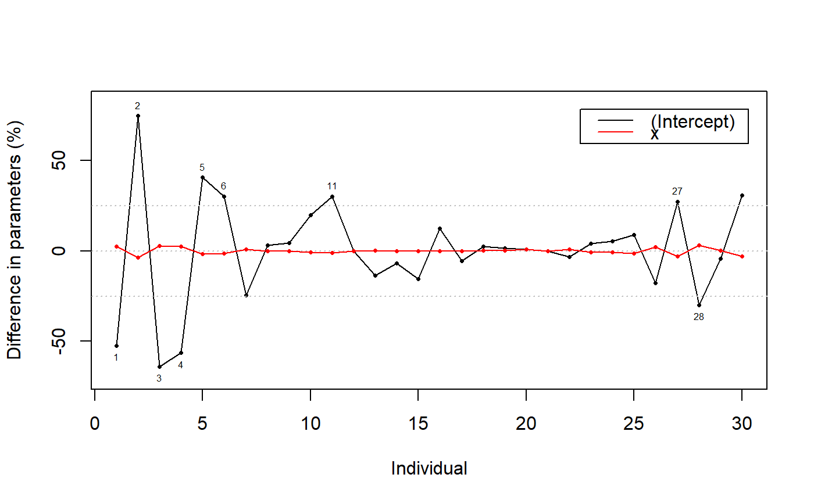
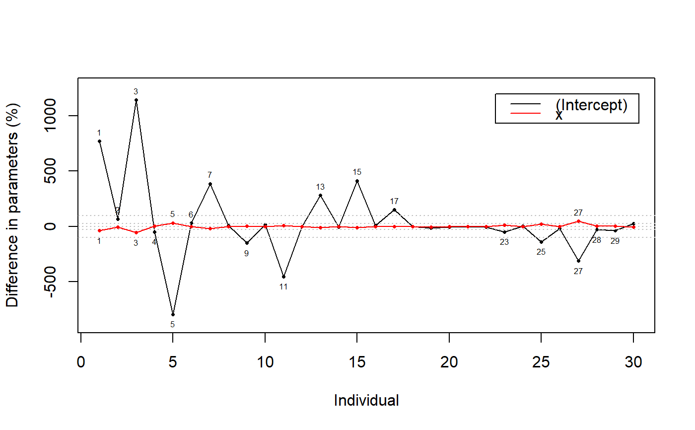

ind.contrib.RdComputes difference in regression parameters when each individual is dropped, expressed in proportion of the whole regression coefficients. The function deals with lm (including glm) and least.rect models.
ind.contrib(model, print.diff = FALSE, graph = TRUE, warning=25)
| model | model (of class |
|---|---|
| print.diff | logical. If |
| graph | logical. If |
| warning | level of graphical warning. |
coefficients of each computed regression.
difference in coefficients between each computed regression and the whole regression.
difference in coefficients expressed in proportion of the whole regression coefficients.
#> $coefficients #> (Intercept) x #> 1.0534096 0.9505357 #> #> $coefficients.diff #> (Intercept) x #> 1 -0.5522145317 2.672006e-02 #> 2 0.7112227109 -3.378829e-02 #> 3 -0.6737464061 3.134676e-02 #> 4 -0.5365098752 2.437076e-02 #> 5 0.4284291191 -1.892779e-02 #> 6 0.2878876089 -1.231027e-02 #> 7 -0.2572775835 1.058158e-02 #> 8 0.0296505685 -1.163274e-03 #> 9 0.0483169701 -1.787820e-03 #> 10 0.1896979496 -6.514082e-03 #> 11 0.3185846904 -9.909892e-03 #> 12 0.0009242676 -2.504467e-05 #> 13 -0.1418372256 3.119587e-03 #> 14 -0.0640873509 9.792634e-04 #> 15 -0.1644891797 9.948942e-04 #> 16 0.1183732334 8.811903e-04 #> 17 -0.0581254334 -1.687513e-03 #> 18 0.0236310231 1.633481e-03 #> 19 0.0172780065 2.926114e-03 #> 20 0.0090986045 7.924591e-03 #> 21 -0.0017645224 9.391813e-04 #> 22 -0.0323771381 8.146506e-03 #> 23 0.0428682171 -7.778507e-03 #> 24 0.0520027385 -7.777536e-03 #> 25 0.0946029065 -1.242481e-02 #> 26 -0.1672905597 1.999868e-02 #> 27 0.2888899307 -3.215065e-02 #> 28 -0.2834157046 2.981231e-02 #> 29 -0.0438925123 4.411034e-03 #> 30 0.2922870265 -2.828584e-02 #> #> $coefficients.prop #> (Intercept) x #> 1 -52.42163508 2.536530730 #> 2 74.82335315 -3.554657833 #> 3 -63.95863602 2.975742991 #> 4 -56.44289368 2.563897080 #> 5 40.67070613 -1.796812403 #> 6 30.28687905 -1.295087852 #> 7 -24.42331888 1.004507470 #> 8 3.11935337 -0.122380908 #> 9 4.58672206 -0.169717420 #> 10 19.95695083 -0.685306324 #> 11 30.24319250 -0.940744467 #> 12 0.09723649 -0.002634795 #> 13 -13.46458460 0.296141890 #> 14 -6.74223477 0.103022263 #> 15 -15.61493090 0.094445147 #> 16 12.45331752 0.092704597 #> 17 -5.51783787 -0.160195293 #> 18 2.48607413 0.171848442 #> 19 1.64019833 0.277775523 #> 20 0.95720804 0.833697329 #> 21 -0.16750583 0.089156326 #> 22 -3.40619893 0.857043602 #> 23 4.06947283 -0.738412410 #> 24 5.47088726 -0.818226541 #> 25 8.98063842 -1.179484770 #> 26 -17.59960760 2.103937911 #> 27 27.42427382 -3.052056280 #> 28 -29.81641759 3.136369312 #> 29 -4.16670901 0.418738747 #> 30 30.74971464 -2.975778836 #>ind.contrib(model2)#> $coefficients #> (Intercept) x #> -0.05508939 1.02205180 #> #> $coefficients.diff #> (Intercept) x #> 1 -0.4238198293 2.093027e-02 #> 2 0.7026929242 -3.116879e-02 #> 3 -0.6288348378 3.046260e-02 #> 4 -0.4852804058 2.293210e-02 #> 5 0.4373574142 -1.785823e-02 #> 6 0.3167106784 -1.265116e-02 #> 7 -0.2129175560 9.100019e-03 #> 8 0.0753129940 -2.887213e-03 #> 9 0.0825947606 -2.948349e-03 #> 10 0.1880966287 -5.547539e-03 #> 11 0.2488762844 -4.748293e-03 #> 12 0.0156389574 -4.144923e-04 #> 13 -0.1550318411 4.361698e-03 #> 14 -0.0652601391 1.292534e-03 #> 15 -0.2275438331 5.137879e-03 #> 16 0.0669832778 4.120724e-03 #> 17 -0.0833034768 -2.971350e-04 #> 18 0.0152989654 1.774061e-03 #> 19 0.0063825083 3.073341e-03 #> 20 -0.0343892257 1.003543e-02 #> 21 0.0001300226 -7.045869e-05 #> 22 -0.0442611063 7.875130e-03 #> 23 0.0265927526 -7.924168e-03 #> 24 0.0452206154 -8.709973e-03 #> 25 0.0757266479 -1.272479e-02 #> 26 -0.1741567142 1.874173e-02 #> 27 0.1711984527 -2.623600e-02 #> 28 -0.2927063883 2.838320e-02 #> 29 0.0208698563 -2.110928e-03 #> 30 0.2765202791 -2.961859e-02 #> #> $coefficients.prop #> (Intercept) x #> 1 769.3311253 -37.99327929 #> 2 68.7531615 -3.04962902 #> 3 1141.4808367 -55.29666546 #> 4 -47.4809991 2.24373199 #> 5 -793.9049765 32.41682809 #> 6 30.9877326 -1.23781968 #> 7 386.4946651 -16.51864071 #> 8 7.3688040 -0.28249182 #> 9 -149.9286152 5.35193650 #> 10 18.4038254 -0.54278457 #> 11 -451.7680833 8.61925161 #> 12 1.5301531 -0.04055492 #> 13 281.4186890 -7.91749129 #> 14 -6.3852086 0.12646461 #> 15 413.0447447 -9.32643939 #> 16 6.5538046 0.40318154 #> 17 151.2150993 0.53936879 #> 18 1.4968875 0.17357843 #> 19 -11.5857305 -5.57882547 #> 20 -3.3647243 0.98189087 #> 21 -0.2360211 0.12789884 #> 22 -4.3306128 0.77052164 #> 23 -48.2720035 14.38419936 #> 24 4.4244935 -0.85220468 #> 25 -137.4614004 23.09843204 #> 26 -17.0399107 1.83373618 #> 27 -310.7648324 47.62441547 #> 28 -28.6390952 2.77708051 #> 29 -37.8836215 3.83182336 #> 30 27.0554075 -2.89795425 #>